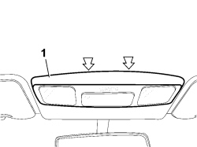
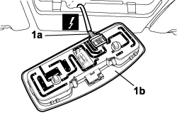

7040E50 FRONT MODULAR COURTESY LIGHT UNIT - R+R
- Path
- Procedures > 70 FITTINGS > 7040 BODY INTERIOR FITTINGS AND TRIM > 7040E INTERIOR COURTESY LIGHT SYSTEM > 7040E50 FRONT MODULAR COURTESY LIGHT UNIT - R+R
- Kind
- repair procedure (removal / refitting; the operation number is the code)
- Applies to
- all engines; all production periods
- Interactive page
- https://sloeber94.github.io/elrnDB-fCrm/en/#/194001054
Applies to: all engines; all production periods
 Removing
Removing
 Refitting
Refitting- Open the front side door.
- Turn the ignition key to the OFF position.
- Disconnect the negative battery terminal.
Description | Connector | |
|---|---|---|
BATTERY |
1. Use a screwdriver on the retaining clips located in the area illustrated in the diagram and release the courtesy light.

Applies to: all engines; all production periods
1. Disconnect the electrical connection (1a) from the courtesy light (1b) and remove the courtesy light (1b).
Description | Connector | |
|---|---|---|
1a | FRONT COURTESY LIGHT |

Applies to: all engines; all production periods
Refitting
Removing- Connect the electrical connector and fit in place.
Description | Connector | |
|---|---|---|
FRONT COURTESY LIGHT |
- Connect the battery.
BATTERY |